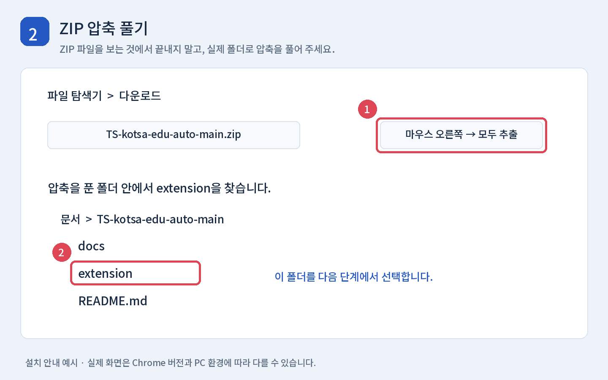
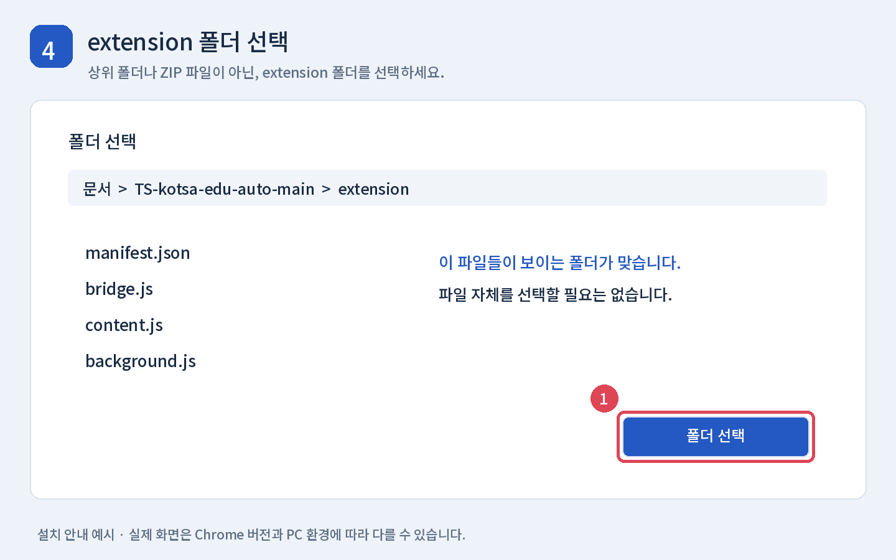

설치 안내 · 이 파일은 Chrome에서 열어 읽을 수 있습니다.TS 학습 도우미
컴퓨터에 익숙하지 않아도 아래 순서대로 따라 하면 설치할 수 있습니다. 한국교통안전공단 교육 영상을 일반 속도로 재생하고, 사이트에서 학습 완료가 확인되면 다음 차시로 이동하는 Chrome 확장 프로그램입니다.
현재 버전: 1.6.1 · Windows PC와 Chrome 기준 안내
ZIP으로 전달받았다면 압축을 푼 폴더의 INSTALL.html을 더블클릭해 같은 안내를 그림과 함께 읽을 수 있습니다.
어떤 기능인가요?
| 기능 | 설명 |
|---|
| 자동 넘기기 | 영상이 끝나고 사이트가 완료로 표시하면 다음 차시로 이동합니다. 30초마다 확인하므로 잠시 기다릴 수 있습니다. |
| 새 차시 음소거 | 새 영상이 열리면 볼륨을 0으로 설정하고 음소거합니다. |
| 활동 유지 시도 | 30초마다 마우스 이동 이벤트를 보내는 기능입니다. 사이트가 이를 무시할 수 있어 세션 연장이 보장되지는 않습니다. |
| 자동 중지 | 재생과 자동 동작을 멈춥니다. |
배속 변경과 별도 End 요청 기능은 없습니다. 평가는 직접 응시하고 설문도 직접 작성해야 합니다. 마지막 차시에는 학습 목록에서 필요한 절차를 확인하세요.
준비할 것
- Windows PC와 Google Chrome을 준비합니다. 휴대폰 Chrome용 설치 방법이 아닙니다.
- 교육 사이트에 로그인할 수 있어야 합니다. GitHub 회원가입과 프로그램 개발 도구 설치는 필요 없습니다.
- 설치한 폴더를 계속 사용할 수 있는 곳에 보관합니다. 설치 후 폴더를 지우거나 이동하면 확장 프로그램이 실행되지 않을 수 있습니다.
- 부대 PC에서 확장 설치나 개발자 모드가 관리 정책으로 제한되면 담당자에게 문의하세요. 제한을 해제하는 방법은 이 안내에 포함하지 않습니다.
아래 그림은 이해를 돕기 위해 제작한 예시 화면입니다. 실제 브라우저 버전과 화면 크기에 따라 버튼 위치와 이름이 조금 다를 수 있습니다.
1단계 파일 다운로드
- GitHub 저장소를 엽니다.
- 파일 목록 위쪽의 초록색 Code 버튼을 누릅니다.
- 메뉴 아래의 Download ZIP을 누릅니다.
- 다운로드가 끝날 때까지 기다립니다. 보통 파일 이름은
TS-kotsa-edu-auto-main.zip입니다.

2단계 압축 풀기
- 키보드에서 Windows 키와 E 키를 같이 누르면 파일 탐색기가 열립니다.
- 왼쪽에서 다운로드 폴더를 엽니다.
- 받은 ZIP 파일을 마우스 오른쪽 버튼으로 누릅니다.
- 모두 추출 또는 압축 풀기를 누릅니다. 압축 프로그램에 따라 이름이 다를 수 있습니다.
- 예를 들어
문서 안에 압축을 풀고, 압축 해제가 끝나면 열린 폴더로 들어갑니다. - 안쪽에 extension이라는 폴더가 보이는지 확인합니다.
ZIP 파일을 두 번 눌러 안을 보기만 한 것은 압축 해제가 아닙니다. 반드시 압축을 푼 실제 폴더를 사용하세요.

3단계 Chrome의 확장 프로그램 화면 열기
- Chrome을 엽니다.
- 화면 맨 위 주소창을 누릅니다. 검색 사이트의 검색창이 아닙니다.
- 아래 주소를 입력하고 Enter를 누릅니다.
chrome://extensions
- 오른쪽 위 개발자 모드 스위치를 켭니다.
- 왼쪽 위에 나타나는 압축해제된 확장 프로그램을 로드합니다를 누릅니다. Chrome 버전에 따라 압축해제된 확장 프로그램 로드로 표시될 수 있습니다.
개발자 모드는 이 확장 프로그램을 내 PC의 폴더에서 읽어 오기 위한 설정입니다. 코드를 입력하거나 수정할 필요는 없습니다.

4단계 extension 폴더 선택
- 폴더 선택 창에서 2단계에서 압축을 푼 위치로 이동합니다.
TS-kotsa-edu-auto-main 폴더 안으로 들어갑니다. 받은 압축 파일 종류에 따라 뒤에 -main이 없을 수도 있습니다.- extension 폴더를 선택합니다.
- 창 아래의 폴더 선택을 누릅니다.
- Chrome 확장 프로그램 화면에 TS 학습 도우미가 표시되면 설치가 완료된 것입니다. 카드의 스위치는 켜진 상태로 둡니다.
선택할 것은 extension 폴더입니다. ZIP 파일, 저장소 전체 폴더, manifest.json 파일 자체를 선택하는 것이 아닙니다. extension 폴더 바로 안에 manifest.json, bridge.js, content.js 등이 있으면 올바른 위치입니다.

5단계 확장 프로그램을 툴바에 고정
- Chrome 오른쪽 위 주소창 옆의 퍼즐 모양 확장 프로그램 버튼을 누릅니다.
- 목록에서 TS 학습 도우미를 찾습니다.
- 옆에 있는 핀 모양을 누릅니다.
- 이제 주소창 옆에서 도우미 아이콘을 바로 누를 수 있습니다. 아이콘 모양은 브라우저에서 정한 기본 그림일 수 있습니다.
고정하지 않아도 실행할 수 있지만, 매번 퍼즐 메뉴에서 찾아야 합니다.
6단계 교육 사이트에서 실행
- 한국교통안전공단 교육 페이지에 로그인합니다.
- 수강할 교육의 영상 페이지를 엽니다. 교육 목록 화면만 열어 둔 상태에서는 영상 패널이 나타나지 않습니다.
- 설치 전부터 영상 페이지를 열어 두었다면 F5를 눌러 새로고침합니다. 영상이 열리기 전 목록으로 돌아갔다면 다시 영상을 엽니다.
- 주소창 옆 TS 학습 도우미 아이콘을 누릅니다.
- 팝업에서 모든 학습 탭에 JS 적용을 누릅니다. 여기서 JS 적용은 영상 화면에 도우미 버튼을 표시한다는 뜻이며, 코드를 입력할 필요는 없습니다.
- 영상 오른쪽 아래에 TS 학습 도우미 패널이 나타나면 자동 시작을 누릅니다.
- 영상이 재생되지 않으면 영상 가운데의 원래 재생 버튼을 한 번 직접 누릅니다.

실행 후에는 어떻게 되나요?
- 영상은 일반 속도인 1배속으로 재생합니다.
- 새 차시의 소리는 자동으로 0과 음소거로 설정합니다. 소리를 들으려면 영상의 스피커 버튼에서 음소거를 풀고 볼륨을 올리세요. 다음 차시에는 다시 음소거됩니다.
- 영상이 끝나고 사이트의 완료가 확인되면 최대 약 30초 후 다음 차시로 넘어갑니다. 비활성 탭이나 절전 상태에서는 더 늦어질 수 있습니다.
- 자동 중지를 누르면 재생, 자동 이동, 활동 유지 시도를 멈춥니다. 다시 시작하려면 자동 시작을 누릅니다.
- 활동 유지 시도는 기본적으로 켜져 있습니다. 필요 없으면 체크를 해제하세요. 패널의 횟수와 시각은 이벤트를 보낸 기록이며 세션 연장 성공 표시가 아닙니다.
- PC 절전·화면 잠금·서버의 최대 세션 만료를 막는 기능은 아닙니다. 활동 유지 이벤트가 실제 마우스 입력으로 인정되지 않는 사이트에서는 로그인이 만료될 수 있습니다.
처음에는 한 차시가 끝날 때까지 직접 확인해 주세요. 진행률과 수료 여부는 교육 사이트의 표시를 기준으로 확인합니다.
안 될 때 확인할 것
| 증상 | 확인할 순서 |
|---|
| 개발자 모드나 설치 버튼이 안 보여요 | chrome://extensions를 주소창에 입력했는지 확인합니다. 관리되는 PC에서 설정이 제한되면 담당자에게 문의합니다. |
| 매니페스트가 없다는 오류가 나요 | 압축을 실제로 풀었는지, 그 안의 extension 폴더를 선택했는지 확인합니다. |
| 설치했는데 패널이 안 나와요 | 영상 페이지를 열고 F5 → 확장 아이콘 → 모든 학습 탭에 JS 적용 순서로 실행합니다. |
| 팝업에 학습 탭이 0개라고 나와요 | 확장을 설치한 것과 같은 Chrome 프로필·일반 창에서 교육 사이트를 엽니다. 다른 브라우저나 시크릿 창에 열어 두지 않았는지 확인합니다. |
| 영상이 자동으로 시작하지 않아요 | 사이트의 원래 영상 재생 버튼을 직접 누릅니다. |
| 영상 소리가 안 나요 | 정상 동작입니다. 필요하면 영상의 음소거를 풀고 볼륨을 올립니다. |
| 영상이 끝났는데 안 넘어가요 | 30초 정도 기다리고 사이트가 완료로 표시하는지 확인합니다. 미완료·평가·설문·마지막 차시에서는 멈출 수 있습니다. |
| 활동 시도 횟수는 늘지만 로그인 시간이 안 늘어요 | 사이트가 코드로 만든 이벤트를 인정하지 않을 수 있습니다. 실제 마우스를 움직여 비교하고 필요하면 다시 로그인합니다. |
| 폴더를 옮기거나 지운 뒤 실행이 안 돼요 | 새 위치의 extension 폴더를 다시 로드합니다. 계속 사용할 폴더는 이동·삭제하지 마세요. |
다른 사람에게 오류 화면을 보낼 때는 이름·수강 번호·쿠키·로그인 토큰을 가려 주세요. 개발자 도구의 요청 Headers 전체를 보내지 않아도 됩니다.
새 버전으로 바꾸기
- 위의 1단계처럼 최신 ZIP을 다시 받습니다.
- 새 ZIP을 압축 해제합니다.
- 기존에 설치한
extension 폴더 안의 파일을 새 extension 안의 파일로 교체합니다. chrome://extensions에서 TS 학습 도우미 카드의 새로고침 버튼을 누릅니다.- 교육 사이트 영상 페이지도 F5로 새로고침합니다.
- 필요하면 확장 아이콘 → 모든 학습 탭에 JS 적용 → 자동 시작을 누릅니다.
두 버전을 동시에 설치할 필요는 없습니다. 설치할 때 썼던 폴더 위치를 기억해 두면 업데이트가 쉽습니다.
삭제하기
chrome://extensions를 엽니다.- TS 학습 도우미 카드에서 삭제를 누릅니다.
- 영상 페이지를 새로고침하면 페이지에 남아 있던 도우미 패널도 사라집니다.
- 더 이상 필요 없으면 PC에 보관한 압축 해제 폴더를 지웁니다.
참고
- 이 프로젝트는 한국교통안전공단의 공식 확장 프로그램이 아닙니다.
- 자동 넘기기는 사용자 환경에서 동작했다는 피드백이 있으나 모든 강의·브라우저에서 보장되지는 않습니다. 사이트가 바뀌면 동작하지 않을 수 있습니다.
- 설치 절차 참고: Chrome 공식 확장 프로그램 설치 안내.
- 구현, 권한, 활동 유지의 제한과 개발자 테스트 설명은 기술 문서를 참고하세요. README만 따라 설치하는 데 Node.js나 명령어 실행은 필요 없습니다.